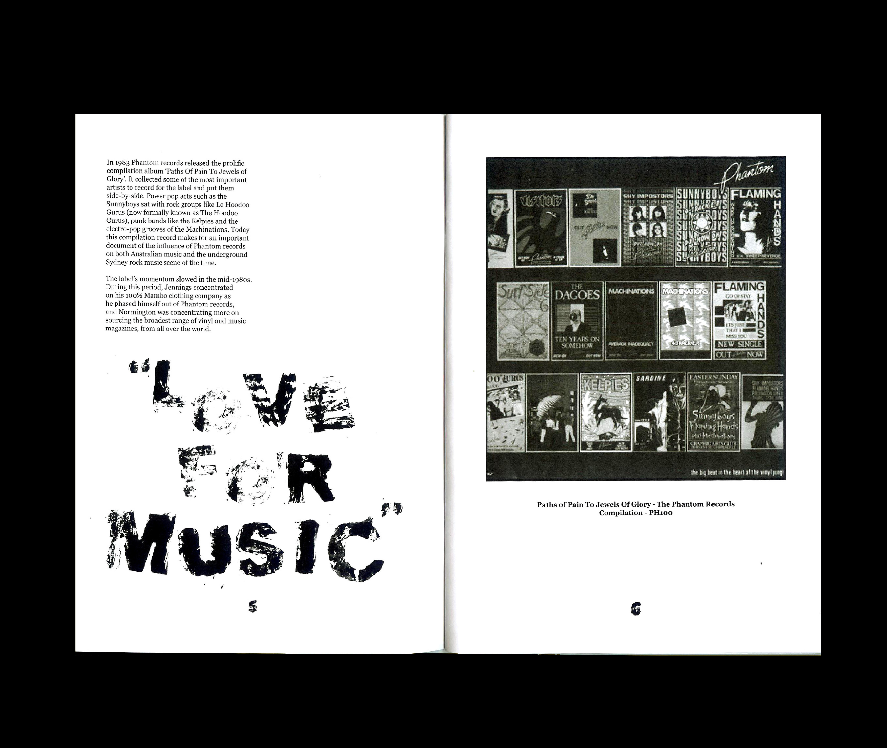
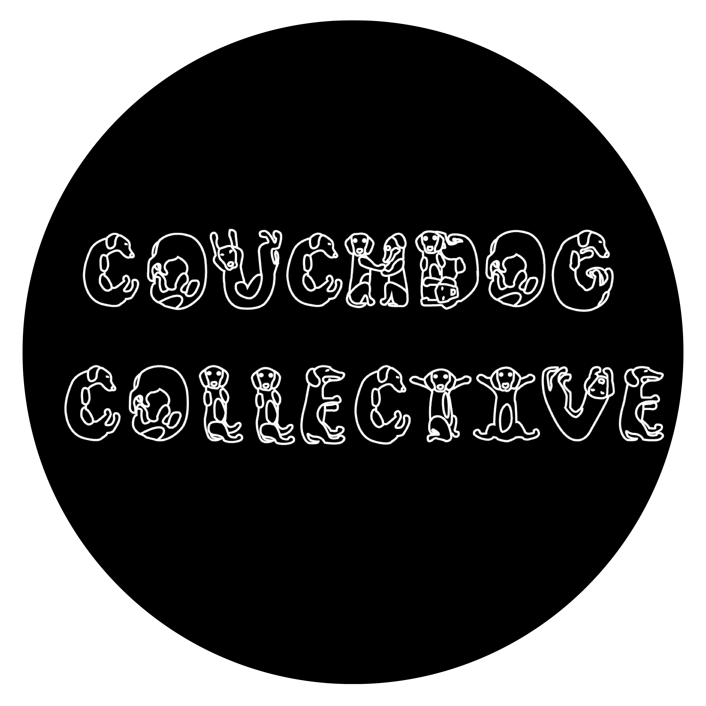

SOUNDING TYPOGRAPHY BRIEF
SOUNDING TYPOGRAPHY BRIEF *Supervised by Rick Milovanovic*
This form of print media is something that I would love to produce more of in the future. Designing record covers for the independent music scene is an area of interest I would love to immerse my creative practice in as a graphic designer.
 SOUNDING TYPOGRAPHY BRIEF
SOUNDING TYPOGRAPHY BRIEF *Supervised by Rick Milovanovic*
Baked Beans (now known as Beans Band) are an underground garage psychedelic rock band from Geelong. The bright, messy, and fun quality to my design replicates their sound visually. This was expressed through the loose but playful DIY typography, messy aesthetic, and bright colours.
 ‘AUSTRALIA WITHOUT THE ARTS IS JUST ULI...IT DOESN'T MAKE SENSE’ CAMPAIGN
‘AUSTRALIA WITHOUT THE ARTS IS JUST ULI...IT DOESN'T MAKE SENSE’ CAMPAIGN *Supervised by Alex Margetic*
My campaign is spread across the two distributions of A0 sized risograph posters and A4 sized flyers, with a strong punk aesthetic. This attacks the Federal Government for having no support for the arts, as well as informing the public of the 2020 government arts funding cuts.
My slogan for my campaign was inspired by the slogan typically seen in street art contexts, 'The Earth without Art is just Eh'. I felt this best encapsulated the expression of the campaign about how important the arts is to Australia's cultural identity, tourism and economy.
 ‘AUSTRALIA WITHOUT THE ARTS IS JUST ULI...IT DOESN'T MAKE SENSE’ CAMPAIGN
‘AUSTRALIA WITHOUT THE ARTS IS JUST ULI...IT DOESN'T MAKE SENSE’ CAMPAIGN *Supervised by Alex Margetic*
I was influenced by designer Jamie Reid’s use of collage design as well as the application of simple bold colours for both of my forms of distribution. Jamie Reid often uses objects, such as ski masks, to obscure politicians/celebrities' faces in his work. I incorporated this into my own work by adding a ski mask over the Prime Minister Scott Morrison’s face. This reinforced the punk aesthetic, while defacing the Prime Minster through my design.
‘AUSTRALIA WITHOUT THE ARTS IS JUST ULI...IT DOESN'T MAKE SENSE’ CAMPAIGN
*Supervised by Alex Margetic*
My processes of creating my posters and flyers were through creating my collage on Photoshop and then exporting each design as a Bitmap file. This created the grungy punk aesthetic to my posters, as well as creating the distorted yet still punk in appearance flyer designs. My typeface of choice was Schmalfette, which further provided me with the ability to create and design poster and flyer designs with a strong punk aesthetic.
*Supervised by Alex Margetic*
My processes of creating my posters and flyers were through creating my collage on Photoshop and then exporting each design as a Bitmap file. This created the grungy punk aesthetic to my posters, as well as creating the distorted yet still punk in appearance flyer designs. My typeface of choice was Schmalfette, which further provided me with the ability to create and design poster and flyer designs with a strong punk aesthetic.
 ‘AUSTRALIA WITHOUT THE ARTS IS JUST ULI...IT DOESN'T MAKE SENSE’ CAMPAIGN
‘AUSTRALIA WITHOUT THE ARTS IS JUST ULI...IT DOESN'T MAKE SENSE’ CAMPAIGN *Supervised by Alex Margetic*
My intention for distributing my posters and flyers is to display them throughout creative parts of Melbourne (such as the Collingwood arts precinct). This is to show support for affected stakeholders of the issue, as well as providing affected stakeholders with access to my campaign.
 MONSTER CHILDREN NEWSPAPER
MONSTER CHILDREN NEWSPAPER *Supervised by Dianne Elderton*
My publication is a newspaper of content sourced from 'Monster Children Magazine'. This publication was printed on a low-quality paper stock, to give the publication a newspaper look and feel as well as reinforcing the grungy DIY aesthetic of some of the articles within the publication.
MONSTER CHILDREN NEWSPAPER
*Supervised by Dianne Elderton*
I experimented with creating more dynamic compositions with both the sourced body text and headings. In doing so, I tried creating a more graphic appeal to both the sourced images and typography.
*Supervised by Dianne Elderton*
I experimented with creating more dynamic compositions with both the sourced body text and headings. In doing so, I tried creating a more graphic appeal to both the sourced images and typography.
MAP OF MELBOURNE ARCHITECTURE
*Supervised by Dianne Elderton*
This print based brief asked for a design of a Melbourne City guide that you would not typically find at a visitor's centre in Melbourne. I chose to design my map on Melbourne's iconic city architecture. All images are my own and information was all sourced online.
*Supervised by Dianne Elderton*
This print based brief asked for a design of a Melbourne City guide that you would not typically find at a visitor's centre in Melbourne. I chose to design my map on Melbourne's iconic city architecture. All images are my own and information was all sourced online.
 MAP OF MELBOURNE ARCHITECTURE
MAP OF MELBOURNE ARCHITECTURE *Supervised by Dianne Elderton*
I designed my city guide with a minimal aesthetic to give attention to both the photography and map. I used a bold typeface as an ode to the depicted architecture. I printed my map on a thicker paper stock, so that the map can be continuously folded and unfolded without it easily tearing. The map folds down to palm size, making it easy for users to carry and use.
 SPACE ODYSSEY BOOK COVERS
SPACE ODYSSEY BOOK COVERS *Supervised by Dianne Elderton*
The book covers were created for a print project around redesigning book covers from a famous book series. I chose Arthur C. Clarke’s ‘Space Odyssey’ book series. I experimented with cutting images from old National Geographic magazines to produce a surreal sci-fi aesthetic to the book covers to visually communicate the surreal and sci-fi aesthetic of the book.
 SPACE ODYSSEY BOOK COVERS
SPACE ODYSSEY BOOK COVERS *Supervised by Dianne Elderton*
The book covers were printed on a thick glossy matte paper stock. This gives the book cover weight, so it wouldn’t tear when placed on a physical book. This also gives the artwork a glossy look reinforcing the idea of space and the surreal nature and aesthetic of my designs.

'THE BIG BEAT IN THE HEART OF THE VINYL JUNGLE'
*Supervised by Tristan Ceddia and Rick Milovanovic*
A publication was the most appropriate way to communicate my research and accompanying interviews. I was dealing with and editing a lot of content and information. The publication name was inspired by the slogan of Phantom Records, which was typically found on their side a and side b labels. This slogan was also found on their promotional posters ‘The Big Beat In The Heart Of The Vinyl Jungle’
*Supervised by Tristan Ceddia and Rick Milovanovic*
A publication was the most appropriate way to communicate my research and accompanying interviews. I was dealing with and editing a lot of content and information. The publication name was inspired by the slogan of Phantom Records, which was typically found on their side a and side b labels. This slogan was also found on their promotional posters ‘The Big Beat In The Heart Of The Vinyl Jungle’
 'THE BIG BEAT IN THE HEART OF THE VINYL JUNGLE'
'THE BIG BEAT IN THE HEART OF THE VINYL JUNGLE' *Supervised by Tristan Ceddia and Rick Milovanovic*
My publication was concerned with unearthing the nearly forgotten record label 'Phantom Records' and the music that they signed and supported. I undertook this project by conducting secondary research, conducting some interviews, and type setting my own experimental typography.
For the production of my hand stamped lettering I cut out raised letters from thick cardboard material which allowed me to letter press each letter and character in black paint to create a DIY aesthetic to the publication. This helped to reinforce the aesthetic of the record label. I coupled the bold, 'rough around the edges' typography with well set body text in Adobe InDesign.
As my content was all about underground music and an independent record label, I wanted to pay a homage to its 'Classic Period' which influenced me to produce my own tangible type-setting process away from the screen. I took the role of a graphic designer, similar to how graphic design was before the digital era.
MAGAZINE FEATURE
My ‘Visions’ graphic was a simple typographic experimentation in Adobe Illustrator, created for fun. This graphic played with the idea of how typography can act as a graphic in its own right. I manipulated and skewed the typography to play around with obscurity and legibility of typography. This resulted in an almost hypnotic and psychedelic look to my graphic.
My ‘Visions’ graphic was later featured in a small print magazine called the ‘Tea and Cake Mag’, which focuses on emerging artists, photographers and designers. This was one of the first times one of my designs was featured and published in a printed magazine.
My ‘Visions’ graphic was a simple typographic experimentation in Adobe Illustrator, created for fun. This graphic played with the idea of how typography can act as a graphic in its own right. I manipulated and skewed the typography to play around with obscurity and legibility of typography. This resulted in an almost hypnotic and psychedelic look to my graphic.
My ‘Visions’ graphic was later featured in a small print magazine called the ‘Tea and Cake Mag’, which focuses on emerging artists, photographers and designers. This was one of the first times one of my designs was featured and published in a printed magazine.
 TYPE SETTING IN DYMO
TYPE SETTING IN DYMO *Supervised by Tristan Ceddia and Rick Milovanovic*
I created an A2 sized black and white poster which was entirely designed and 'type set' with a Dymo label maker to produce 100 words of ‘type-set’ text. This poster is communicating the limitations and inconsistencies of the Dymo label and label maker, with a strong punk aesthetic.
My poster is also exploring the idea of subcultures in the 1970s that used the Dymo to produce their own art and rebellious designs. These subcultures informally undertook the role as the graphic designer by moving away from only using the Dymo label in a business and domestic context.
 DFPR STICKERS
DFPR STICKERS My logo redesign for 'Dead Family Pets Records' has been translated into both digital use for the record label's website and social media, as well as for print purposes. This project was a really exciting opportunity for me as a designer, to use both my typography and layout skills coupled with my strong passion and interest in Melbourne's independent music scene.
 LOGO REDESIGN
LOGO REDESIGN I redesigned a logo for a small indepedent Melbourne record label called 'Dead Family Pets Records'. The client asked for a clearer and more legibile redesigned logo. I used their existing typography and dog graphic and I revamped the composition and legibility of the logo, while maintaining a strong DIY aesthetic.
DUNE PEAKS SINGLE ART
The design for 'Eventide and the next light' had 3 accompanying single designs that similar to the EP cover all drew on the soundscapes and sonics of slick drums, bass grooves and washed-out guitar lines sunk in a sea of reverb. I went for a bold, low-fi aesthetic to visually reflect the tone and feel of the single and overall EP.
My design process consisted of photographing a local beach landscape and experimenting with a halftone bitmap image effect and finding a suitable typeface (in this case Schmalfette) that worked well with the cover design & single artwork.
With the single artwork in particular I extracted visual elements from the EP cover to create stand alone single artwork that also connects and links back well to the EP cover.
The design for 'Eventide and the next light' had 3 accompanying single designs that similar to the EP cover all drew on the soundscapes and sonics of slick drums, bass grooves and washed-out guitar lines sunk in a sea of reverb. I went for a bold, low-fi aesthetic to visually reflect the tone and feel of the single and overall EP.
My design process consisted of photographing a local beach landscape and experimenting with a halftone bitmap image effect and finding a suitable typeface (in this case Schmalfette) that worked well with the cover design & single artwork.
With the single artwork in particular I extracted visual elements from the EP cover to create stand alone single artwork that also connects and links back well to the EP cover.
 DUNE PEAKS EP COVER
DUNE PEAKS EP COVER The design for 'Eventide and the next light' draws on the soundscapes and sonics of slick drums, bass grooves and washed-out guitar lines sunk in a sea of reverb. I went for a bold, low-fi aesthetic to visually reflect the tone and feel of the EP.
My design process consisted of photographing a local beach landscape and experimenting with a halftone bitmap image effect and finding a suitable typeface (in this case Schmalfette) that worked well with the cover design.
PRIVATE MOUNTAIN SINGLE LAUNCH POSTER
I designed an A3 poster to be printed for Private Mountain's single launch at the Worker's Club. I drew on the VHS aesthetic of their '22' single cover design, using for brand consistency the same VHS typeface for the final design.
I designed an A3 poster to be printed for Private Mountain's single launch at the Worker's Club. I drew on the VHS aesthetic of their '22' single cover design, using for brand consistency the same VHS typeface for the final design.
 FOLEY MAGAZINE EVENT A3 POSTER
FOLEY MAGAZINE EVENT A3 POSTER The A3 poster was designed with a simple but heavy psychedelic aesthetic, similar to the aesthetic of Foley Magazine's 3rd edition of their magazine that the event launch was for.
The client was happy with how “efficient” I was and that I was able to capture their vision perfectly.
 PRIVATE MOUNTAIN '22' SINGLE COVER DESIGN
PRIVATE MOUNTAIN '22' SINGLE COVER DESIGN For my internship for Push Records (The Push Inc) I designed a single cover for online streaming services for an upcoming Melbourne based band Private Mountain. I collaborated with a videographer in the team, who created the glitchy visual to create this minimal design conveying a strong VHS aesthetic.
Listen here to the single.
 MENTAL HEALTH WEEK GRAPHIC
MENTAL HEALTH WEEK GRAPHIC I created this graphic for a voluntary not-for-profit Melbourne based magazine. The graphic was designed in response to an article written about youth mental health. This inspired my thinking to extract ideas and quotes from the article and use those words to form an interesting graphic.
SAGE GREEN AND WHITE TOTE BAG DESIGN
For Private Mountain's merchandise I designed some tote bag designs. The design for the tote bags conveys a clean yet simple design drawing on the band's existing VHS/glitchy aesthetic, translated to a physical tote bag.
All tote bags were printed by Sound Merch
For Private Mountain's merchandise I designed some tote bag designs. The design for the tote bags conveys a clean yet simple design drawing on the band's existing VHS/glitchy aesthetic, translated to a physical tote bag.
All tote bags were printed by Sound Merch
 BLACK AND WHITE TOTE BAG DESIGN
BLACK AND WHITE TOTE BAG DESIGN For Private Mountain's tote bags I created a mountain graphic and experimented with different textures to produce the final outcome being a glitchy looking mountain one would see on an old CRT TV screen.
All tote bags were printed by Sound Merch
 SIGHT & SOUND A3 POSTER
SIGHT & SOUND A3 POSTER For Melbourne artist collective Couchdog Collective and Melbourne based band Uncle Umma I designed an A3 event poster for their co-run event 'Sight & Sound' which is a live music and visual art event showcasing the convergence of Audio and Visual inside Melbourne's Norla Dome!
I went for a psychedelic aesthetic that translates the idea of sight and sound through repeated line work and shapes depicting movement and sound waves.
This was a fun project for Couchdog Collective x Uncle Umma's event showcasing some of Melbourne's finest DJs, bands, and visual artists.
 MELBOURNE SCOOTER WAREHOUSE SIGNAGE
MELBOURNE SCOOTER WAREHOUSE SIGNAGE Outdoor signage designed for the front gate of Melbourne Scooter Warehouse.
The sign is printed on an A2 sized aluminium composite panel with a nice matte finish by R&D Signage.
MELBOURNE SCOOTER WAREHOUSE LOGO
New logo design for a Mornington Peninsula based motor scooter retail showroom and ecommerce website 'Melbourne Scooter Warehouse'. The logo was designed with the intention of communicating the idea of motor scooters with the circular design paying homage to both vintage and modern scooter headlights.
New logo design for a Mornington Peninsula based motor scooter retail showroom and ecommerce website 'Melbourne Scooter Warehouse'. The logo was designed with the intention of communicating the idea of motor scooters with the circular design paying homage to both vintage and modern scooter headlights.

COUCHDOG COLLECTIVE LOGO
For Melbourne artist collective Couchdog Collective, I went for a more illustrative type design consisting of dogs forming each letter of the logo to create a playful and more visually expressive logo to suit the style of content Couchdog Collective produces.
For Melbourne artist collective Couchdog Collective, I went for a more illustrative type design consisting of dogs forming each letter of the logo to create a playful and more visually expressive logo to suit the style of content Couchdog Collective produces.
MELBOURNE SCOOTER WAREHOUSE STICKERS
The logo I designed for Melbourne Scooter Warehouse was printed with a lovely mattee finish by R&D Signage.
The logo I designed for Melbourne Scooter Warehouse was printed with a lovely mattee finish by R&D Signage.
 AT PEACE PANORAMA EP COVER
AT PEACE PANORAMA EP COVER For Melbourne instrumentalist Dune Peaks, I designed his second EP cover 'At Peace Panorama'.
My design draws on Gareth's atmospheric and serene recordings translating his uplifting and immersive sounds visually through a brightly coloured and washed out looking EP cover design.
Landscape photo taken by Gareth Holloway.